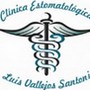

More Website Templates @ TemplateMonster.com - September 14, 2013!
SERVICIOS
Centro de Formacion en Tecnologias de Informacion
Creado en 1994, es un centro de servicio educativo que ofrece a la comunidad estudiantil universitaria y al publicó en general, la enseñanza de idiomas nacionales y extranjeros, promoviendo el intercambio cultural con diferentes países del mundo.

Brinda Servicios odontológicos de calidad a la población de la Región Cusco, a través de la formación profesional del futuro estomatólogo, altamente competitivo en los aspectos científico, tecnológico y humanístico;buscando el bienestar de la sociedad a través de actividad preventivo-promocional de la salud bucal.
La Facultad de Ciencias de la Salud a través del Centro de Salud Psicológica ‘Luis Estrada de los Ríos’, viene ofreciendo a la colectividad cusqueña desde el año 1997, sus servicios de atención psicológica con el fin de generar estilos de vida saludable en concordancia con el manifiesto de Alma –Ata OMS:
El Centro de Salud integral de la Universidad Andina del Cusco, es una unidad formativa académico – asistencial de seis escuelas profesionales de la Facultad de Ciencias de la Salud como Enfermería, Estomatología, Medicina Humana, Obstetricia, Psicología y Tecnología médica
Se realizan las practicas de las diferentes asignaturas programadas para la formación de los futuros profesionales de la Facultad de Ciencias de la Salud. Cuenta con personal profesional especializado como Biólogos, Microbiólogos, Médicos, Bioquímicos y Farmacéuticos.